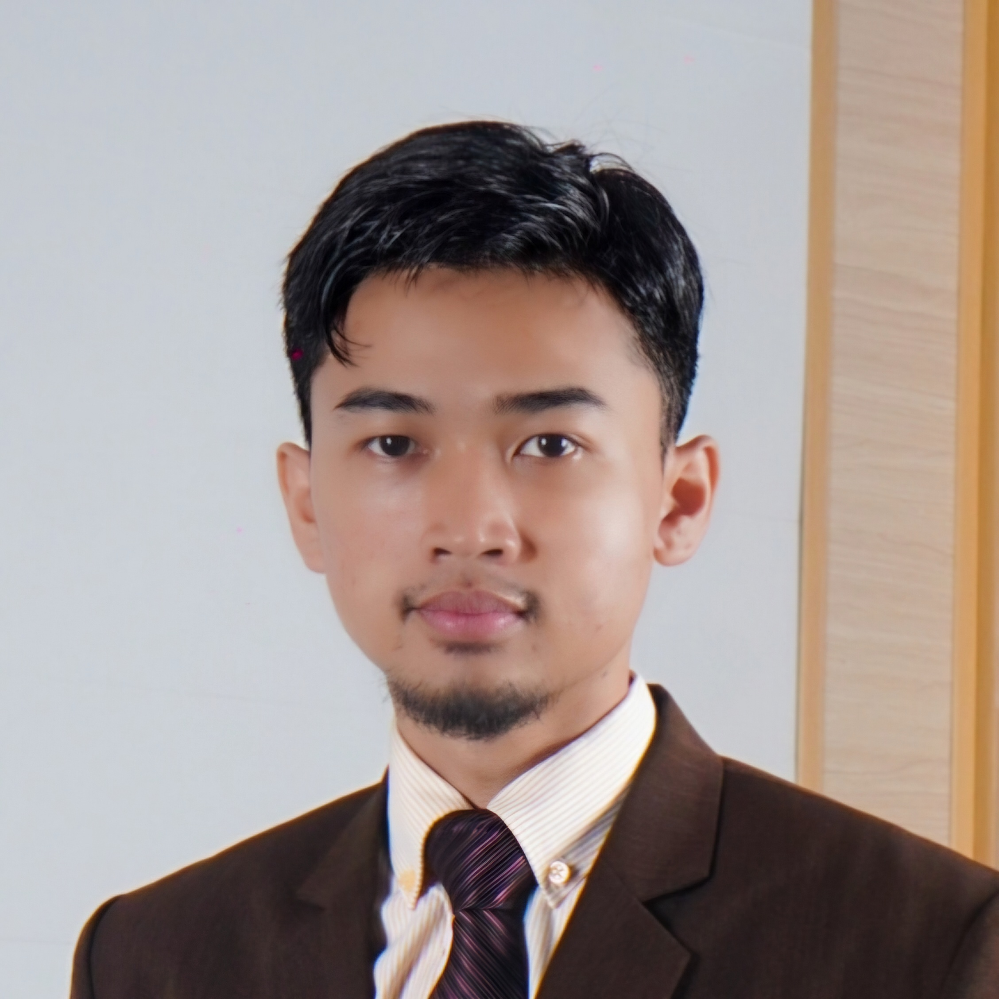

📍 Kairo, Mesir
Seorang mahasiswa kedokteran yang berdedikasi dengan latar belakang akademis tambahan di bidang teori hukum komparatif dan filsafat. Memiliki minat mendalam terhadap penelitian lintas disiplin dan berencana untuk mengejar spesialisasi bedah di masa depan. Di luar dunia medis dan akademik, saya memiliki ketertarikan pada manajemen infrastruktur digital dan produksi media visual.
Fokus pada yurisprudensi komparatif, kritik epistemologis, dan penyusunan karya tulis akademis.
Menerapkan gaya hidup disiplin melalui latihan calisthenics rutin dan manajemen nutrisi terstruktur.
Berpengalaman dalam manajemen jaringan NAS (QNAP) serta eksplorasi produksi dan penyuntingan media visual sinematik.
Memiliki hobi memasak dengan ketertarikan khusus pada kreasi resep fusion menggunakan bahan-bahan lokal.
Terbuka untuk diskusi akademis, kolaborasi proyek, atau sekadar berbagi wawasan.